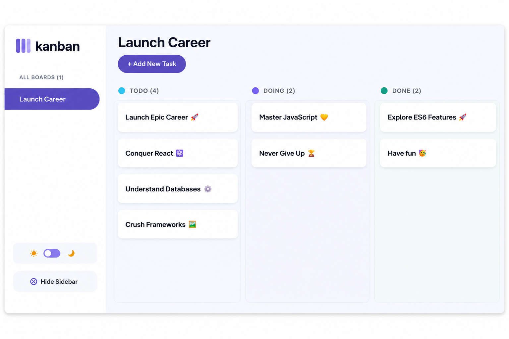

Kanban Task Management App
A responsive task management application built with JavaScript. Features include dynamic task creation, editing, deletion, local storage persistence, theme switching, and API data fetching.
HTML
CSS
JavaScript
API
View Repository